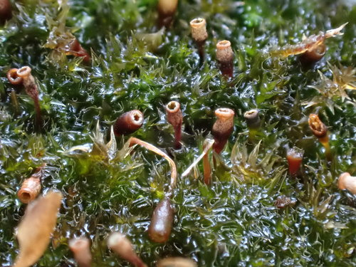

Amblystegiaceae
Feather Moss Family
The Amblystegiaceae is a family of pleurocarpous mosses (mosses where the reproductive structures arise from lateral buds, not the tip of the main stem), commonly known as feather mosses. This family is widespread, particularly in temperate regions, and includes species adapted to a variety of moist to wet habitats, including aquatic environments.
Overview
Amblystegiaceae is characterized by its typically slender, creeping to ascending stems that form loose to dense mats or wefts. These mosses are primarily found in damp soil, on rocks, logs, tree bases near water, or fully submerged in streams, ponds, and marshes. Their ecological roles include primary colonization of wet substrates and contributing to substrate stabilization and nutrient cycling in aquatic and riparian ecosystems.
The family exhibits significant variation in size and form, from very delicate, thread-like species to more robust aquatic forms. While traditionally a large family, recent molecular studies have led to the reclassification of some genera into other families within the order Hypnales.
Economically, Amblystegiaceae are not major sources of commercial products, but they play important roles in their ecosystems. Some species are used in biomonitoring of water quality due to their sensitivity to pollution. They are also part of the biodiversity studied by bryologists and ecologists interested in wetland and aquatic flora.
Quick Facts
- Scientific Name: Amblystegiaceae
- Common Name: Feather Moss Family
- Number of Genera: Approximately 30-40 (classification varies)
- Number of Species: Approximately 150-200
- Distribution: Cosmopolitan, especially common in temperate and boreal regions, often in wet or aquatic habitats.
- Evolutionary Group: Bryophytes - Mosses (Order: Hypnales)
Key Characteristics
Growth Form and Habit
Members of Amblystegiaceae are pleurocarpous mosses. Their growth habit is typically prostrate (creeping) or ascending, forming mats or wefts. Stems are usually irregularly to pinnately branched. Some species are very slender and delicate, while others, particularly aquatic ones like Leptodictyum riparium, can be more robust.
Stems
Stems vary in rigidity and branching patterns. Paraphyllia (small, filamentous or leaf-like structures on the stem) are generally absent or sparse, which helps distinguish them from some related families like Thuidiaceae. Pseudoparaphyllia (small structures at branch bases) may be present or absent.
Leaves
Leaves are typically arranged spirally along the stem and branches, often spreading to erect-spreading when moist. Leaf shape varies but is commonly ovate-lanceolate to lanceolate, sometimes acuminate (tapering to a point). The costa (midrib) is a key feature: usually single and strong, ending near the leaf apex, but can sometimes be short or weak in certain genera (e.g., some Amblystegium species). Leaf cells (laminal cells) are typically smooth, and range from short-rhomboidal to linear. Alar cells (cells at the basal corners of the leaf) are often differentiated, appearing quadrate or somewhat inflated, but usually not forming distinctly coloured or auriculate groups.
Sporophytes (Reproductive Structures)
Being pleurocarpous, the sporophytes arise from short lateral branches. The seta (stalk supporting the capsule) is typically elongated, smooth, and often reddish or brownish. The capsule (spore-producing structure) is usually inclined to horizontal, often curved and asymmetric, and typically cylindrical to ovoid. The operculum (lid of the capsule) is often conic to rostrate (beaked). The peristome, which regulates spore release, is double (diplolepidous) and characteristic of the Hypnales order, consisting of 16 outer teeth and 16 inner segments.
Spores and Dispersal
Spores are small, typically spherical, and dispersed primarily by wind or water after the capsule matures and the operculum detaches. Vegetative reproduction through fragmentation is also common, especially in aquatic species, allowing them to colonize new areas within water bodies.
Habitat
Amblystegiaceae are predominantly found in moist to wet environments. They occur on damp soil, decaying wood, rocks in seepage areas, along streams, in swamps, marshes, fens, and submerged in ponds and slow-moving water. Their habitat preference is a key identification characteristic.
Field Identification
Identifying Amblystegiaceae in the field relies on recognizing their pleurocarpous growth habit combined with their typical habitat and specific leaf characteristics. Magnification (hand lens or microscope) is often necessary for key features.
Primary Identification Features
- Pleurocarpous growth habit: Look for creeping or ascending stems forming mats, with sporophytes arising from side branches (if present).
- Habitat: Check the location – typically very moist soil, rocks near water, logs in swamps, or submerged in water.
- Leaf Shape and Costa: Examine leaves (often requires a hand lens). Look for ovate-lanceolate shapes and a typically strong, single costa extending towards, but usually not reaching, the leaf tip.
Secondary Identification Features
- Branching Pattern: Note if branching is irregular or somewhat pinnate.
- Leaf Cells: Laminal cells are typically smooth and elongate-rhomboidal to linear (requires microscope).
- Alar Cells: Check for differentiated (often quadrate or slightly inflated) cells at the leaf base corners (requires magnification).
- Paraphyllia: Absence or scarcity of paraphyllia on stems.
- Capsule Features (if present): Inclined to horizontal, often curved capsules on long setae are characteristic.
Seasonal Identification Tips
- Year-round: The vegetative gametophyte is typically present year-round, identifiable by its habit, leaf shape, and costa.
- Spring/Summer: Sporophytes (seta and capsule) are most commonly found maturing during spring and summer in temperate regions, aiding identification.
- Aquatic Forms: Submerged forms can be found throughout the year, though they may be less conspicuous during periods of high water flow or ice cover.
Common Confusion Points
Amblystegiaceae can be confused with other pleurocarpous moss families found in similar habitats:
- Hypnaceae: Often have falcate (curved) leaves and frequently lack a strong costa or have a short double costa. Alar cells can be variable.
- Brachytheciaceae: Often more robust, leaves sometimes plicate (folded), costa usually strong but ending well before the apex, capsules often shorter and thicker. Many species prefer drier habitats but some are aquatic.
- Thuidiaceae: Distinguished by the presence of abundant paraphyllia on stems and branches, giving a feathery or rough appearance.
- Leskeaceae: Often have papillose leaf cells (roughened surface, requires microscope) and are typically found on bark or rock, though some occur in damp places.
Field Guide Quick Reference
Look For:
- Pleurocarpous moss in wet/aquatic habitat
- Irregular to pinnate branching
- Ovate-lanceolate leaves
- Strong, single costa ending before apex
- Differentiated alar cells (often quadrate)
- Inclined, curved capsules (if present)
Key Variations:
- Size: Very slender to robust aquatic forms
- Costa: Usually strong, but can be weaker/shorter
- Habitat: Damp soil/rock to fully submerged
- Leaf Stance: Spreading when moist, appressed when dry
- Absence of abundant paraphyllia
Notable Examples
The Amblystegiaceae family includes several widespread and ecologically significant genera:

Amblystegium serpens
Creeping Feather-moss
A very common and variable species found in a wide range of habitats, from damp soil and rocks to tree bases and decaying wood. It forms delicate, thin mats with small, ovate-lanceolate leaves and a relatively distinct costa ending mid-leaf or beyond. Often produces sporophytes.

Leptodictyum riparium
Kneiff's Feather-moss / Streambank Moss
A largely aquatic or semi-aquatic species, often found submerged or emergent along streams, ponds, and ditches. It typically has larger, more elongated lanceolate leaves than Amblystegium, often appearing stringy. The costa is strong but variable in length. Common in nutrient-rich waters.

Hygroamblystegium tenax
Rigid Feather-moss
Often found attached to rocks in streams or seepage areas, sometimes in calcareous water. Characterized by relatively stiff stems and broadly ovate leaves with a very strong costa that often reaches near or into the leaf apex. Forms dark green to blackish mats.

Campyliadelphus chrysophyllus
Golden Feather-moss
Often found in somewhat drier, calcareous habitats like grassy banks or soil over rock, but included here as it's sometimes placed within or near Amblystegiaceae. Recognizable by its golden-green color and spreading, often somewhat falcate-secund (curved to one side) leaves with a weak or absent costa. (Note: Often placed in Campyliaceae).
Phylogeny and Classification
Amblystegiaceae belongs to the division Bryophyta (mosses), class Bryopsida, subclass Bryidae, and order Hypnales. The Hypnales is the largest order of mosses, encompassing a vast diversity of pleurocarpous forms. Amblystegiaceae is considered a relatively derived family within this order.
The circumscription of Amblystegiaceae has changed over time with the advent of molecular phylogenetics. Several genera previously included have been moved to other families (e.g., Campyliaceae, Cratoneuraceae). The family represents an evolutionary lineage adapted primarily to hydric environments, showcasing variations in morphology related to water availability and flow.
Position in Plant Phylogeny
- Kingdom: Plantae
- Division: Bryophyta (Mosses)
- Class: Bryopsida
- Subclass: Bryidae
- Order: Hypnales
- Family: Amblystegiaceae
Evolutionary Significance
The Amblystegiaceae demonstrate successful adaptation to a wide range of wet and aquatic environments. Key aspects of their significance include:
- Ecological Niche Specialization: Successful colonization of challenging habitats like submerged rocks in streams, fluctuating water levels, and nutrient-rich wetlands.
- Morphological Plasticity: Many species exhibit considerable variation in form depending on environmental conditions (e.g., light, water depth, flow rate).
- Role in Aquatic Ecosystems: Contribute to primary productivity, provide habitat for invertebrates, and influence substrate stability in aquatic systems.
- Phylogenetic Insight: Studying Amblystegiaceae helps understand the diversification and relationships within the large and complex Hypnales order.